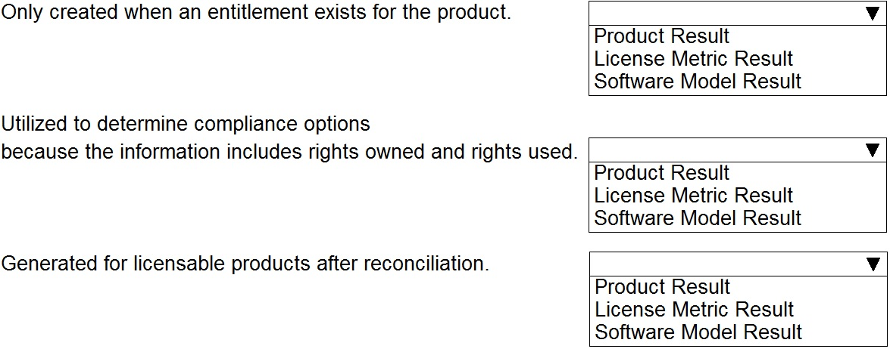
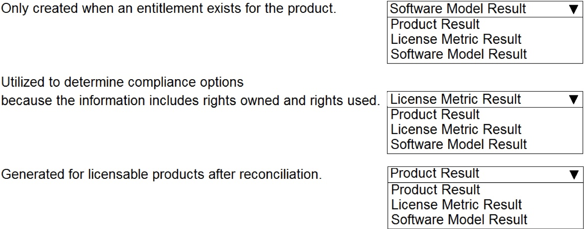
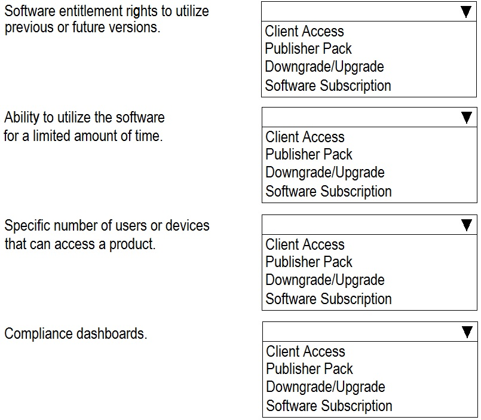
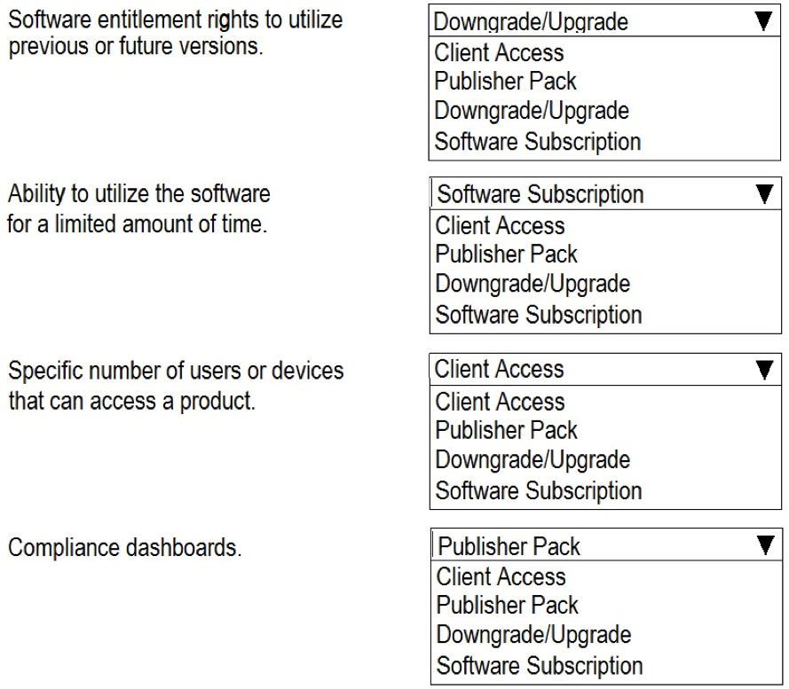

Answers verified with AI using ServiceNow documentation. Exercise your own judgement.
Question 1
Which of the following data elements are key to an effective Software Asset Management practice within ServiceNow? (Choose four.)
A. Software allocations
B. Software models
C. Foundation data
D. Software contracts
E. Software entitlements
Question 2
HOTSPOT - Match the best practice method for the amount of data:
Question 3
Within Software Asset Management there are many key terms to understand, what is the best definition for Normalization?
A. One or more use rights assigned to a specific device or user
B. Classification of the acquired software
C. The process of standardizing discovered software installation to defined norms
D. The process of producing a compliance position by comparing the number of software rights acquired against the normalized software inventory
E. Software license details that define use rights
Question 4
Which discovery sources are recommended by ServiceNow to populate ServiceNow software installation table? (Choose two.)
A. ServiceNow Service Mapping
B. HP UCMDB
C. Microsoft SCCM
D. ServiceNow Discovery
E. ServiceNow Orchestration
Question 5
Creation of a template can help facilitate future data imports and be reused to import and transform data.
A. True
B. False
Question 6
Client access is the right to use for a specific amount of time.
A. True
B. False
Question 7
Coalesce can only use a single field to uniquely identify a record.
A. True
B. False
Question 8
When receiving an order, which data point is mandatory?
A. Assigned To
B. Cost
C. Asset Tag
D. Serial Number
Question 9
How are the Software Asset Management Professional Plugins activated?
A. They are requested from and activated by an admin user
B. They are activated by the sam_developer user
C. They are activated by the sam_admin user
D. They are requested from and activated by ServiceNow support
E. They are activated by default in the base ServiceNow system
Question 10
Which of the following are true of plugins? (Choose two.)
A. Plugins can be disabled or deactivated when no longer in use.
B. Plugins can be activated by default in the base ServiceNow system.
C. When a plugin is active you cannot hide its functionality.
D. Plugins are stand-alone and do not depend on other plugins being activated.
E. Plugins are software components that provide specific features and functionalities.
Question 11
When receiving software related to a purchase order in ServiceNow, which data point is mandatory?
A. Serial Number
B. Assigned To
C. Cost
D. License key
E. Asset Tag
Question 12
Which of the following are NOT features of the Publisher workbench navigation tree? (Choose two.)
A. Expand and collapse tree links
B. List of all publishers
C. Software model compliance icons
D. Filter products
E. Compliance toggle switch
F. List of all publishers out of compliance
Question 13
Mechanism for mapping data from the import set table to the permanent table in ServiceNow is called:
A. Mapping Assist
B. Transform Map
C. Reconciliation Map
D. Discovery Map
Question 14
In which stage of the ServiceNow Implementation Methodology (SIM) is the purpose to define processes and requirements for engagement and finalize delivery plan and user stories?
A. Transition
B. Close
C. Create
D. Prepare
E. Initiate
F. All of the above
Question 15
What is used to determine if installations are a part of a suite only when the suite parent is not discovered on a device?
A. inference percent
B. product results
C. software model
D. model bundles
Question 16
Which statements are true in regards to ServiceNow’s Client Software Distribution (CSD) functionality? (Choose two.)
A. Removes software daily utilizing a scheduled job.
B. ServiceNow does not have Client Software Distribution.
C. The first stage in the CSD process flow is configuration.
D. CSD can automatically distribute and reclaim software without a license for Orchestration.
Question 17
Which of the following SAM roles has permission to grant a user the script writing capability?
A. discover_admin
B. sam_admin
C. sam_developer
D. asset
Question 18
Within the Capability Blueprint there are 4 tiers identified. Which tier is identified as Tier 1?
A. Strategic Conformance
B. Operational Integration
C. Trustworthy Data
D. Practical Management
Question 19
Which of the following are available publisher packs? (Choose four.)
A. SAP
B. OpenVMS
C. Citrix
D. NetSuite
E. Oracle
F. IBM
Question 20
Which of the following features aggregates usage over a period of time and specifies a minimum number of hours the software must be used, or date last used?
A. Software usage metering
B. Software reconciliation rule
C. Software reclamation type
D. Software consumption rule
E. Software reclamation rule
Question 21
By default, which user role must verify the successful activation of plugins by ServiceNow support?
A. sam_user
B. asset_admin
C. sam_admin
D. sys_admin
Question 22
When populating software usage records automatically via Microsoft System Center Configuration Manager (SCCM), which plugins are required? (Choose two.)
A. Microsoft Publisher Pack plugin
B. Microsoft SCCM Software Usage plugin
C. Microsoft SCCM Integration plugin
D. Performance Analytics Premium for Software Asset Management plugin
E. Orchestration-Client Software Distribution plugin
Question 23
An allocation is automatically created in which of the following scenarios? (Choose two.)
A. After receiving the rights for software from a purchase order
B. After a Create allocation remediation option has been taken
C. After reconciliation runs and identifies that rights are ‘Not allocated in use’
D. When a software installation is discovered
E. After successfully sourcing a request via an existing entitlement
Question 24
In the ServiceNow base platform, which roles have the ability to refresh processor definitions?
A. sam_user / sam_admin / sys_admin
B. sam_user / sys_admin
C. sam_admin / sys_admin
D. sys_admin / asset_admin
Question 25
Which of the following are required to import usage data using the System Center Configuration Manager (SCCM) data? (Choose three.)
A. Reclamation Candidate
B. Software Product
C. SCCM Application
D. Software Models
E. Product Process
F. Reclamation Rule
Question 26
Software usage data can be imported utilizing:
A. Transform Map
B. Other Third Party Sources
C. System Center Configuration Manager (SCCM)
D. Manually
Question 27
Which of the following statements is incorrect with regards to on-premise import and export of Content Service data?
A. Clicking on the “Manage Software Library” module takes the user to an interceptor page where they can select to import or export data.
B. On-premise instances do not receive automatic Software Library updates.
C. Normalization content is eligible for the export feature.
D. By default, you are opted in to the Manage On-Premise Library (com.sn_samp_on_prem) plugin.
E. You must opt-in to the SAM Content Service through the Content Service setup page.
Question 28
If a value from an import does not exist in ServiceNow and the import should not create a new record, which option should be selected?
A. Reject
B. Create
C. Delete
D. Ignore
Question 29
When loading a medium amount of data, which is the best method to use?
A. Use Discovery to find software on the network
B. Modify a workflow
C. Manually add through ServiceNow forms
D. Import data
E. Create a business rule
Question 30
What is a first key step prior to uploading your entitlement import data via the ServiceNow-provided template?
A. Ensure you have filled out every field in the template file
B. Ensure the entitlement data is listed on the first tab of the template file
C. Ensure you have downloaded and used the latest version of the template file
D. Ensure you have the sam_user role assigned to you
Question 31
What are three ways to get software asset data into ServiceNow?
A. Clone, Background Script, Discovery
B. Import Data, Plugin, Clone
C. Discovery, Import Data, Manual
D. Plugin, Background Script, Manual
Question 32
The Software Asset Management Content Service is automatically enabled and cannot be opted out.
A. True
B. False
Question 33
What table is populated with the content library data that is pulled from the content service?
A. samp_sw_package
B. cmdb_sw_product_model
C. sam_content_library
D. cmdb_ci_spkg
Question 34
When specified during an entitlement import, which of the following is matched to data in the Content Service Library and used to create a software model automatically?
A. Purchage Order (PO)
B. Software Model
C. Publisher Part Number (PPN)
D. Asset Tag
Question 35
As part of the software normalization process, software discovery models are normalized via which mechanisms? (Choose two.)
A. Fix script
B. Scheduled job
C. Business rule
D. Integration
E. Workflow
Question 36
What is the definition of Partially Normalized?
A. A discovery model normalized based on publisher field alone.
B. The software discovery model has not yet completed its run through the normalization process.
C. A discovery model was normalized based on publisher and product fields only.
D. A discovery model was normalized based on publisher, product, version fields.
Question 37
What is the name of the Scheduled job that runs daily for normalization?
A. Create a Software Normalization
B. Software Installation Normalization
C. Software Model Cleanup
D. Discovery Model Normalization
Question 38
Within Software Asset Management there are many key terms to understand, what is the best definition for Software Allocation?
A. One or more use rights assigned to a specific device or user.
B. Something acquired with use rights.
C. The process of normalizing a discovered software installation to standardized values.
D. Finding and recognizing software or a software feature on a device.
Question 39
How often is the scheduled job for the normalization process run?
A. Nightly
B. Weekly
C. Every time Discovery is run
D. Nightly for new discovery models and weekly for all discovery models that do not have a status of normalized or manually normalized
E. Immediately for new discovery models and nightly for all discovery models that do not have a status of normalized or manually normalized
Question 40
Discovery models may not be fully normalized until updated content is downloaded from the ServiceNow Software Content Library. How do you determine if the content has been downloaded?
A. Review the Last updated date of the Central Data Service Download Status jobs on the Normalization and Content Service dashboard.
B. Determine if the business rule “Create a Software Normalization Download” has been triggered yet or not.
C. Query the scheduled job reports to determine if the “Software Content Library Download” (samp_cds_download) job has completed yet.
D. Review the number of records in the samp_product_map table. If there are ~7,700 records in the table, the download has completed at least once.
Question 41
When populating the Downgrade Rights table, if there is no software model corresponding to a discovery map, which of the following is automatically created?
A. Software Discovery Model
B. Software Model
C. Software Downgrade Model
D. Software Install Model
Question 42
For software asset management, when software is discovered, the records from the discovered pattern are copied into which table?
A. cmbd_sam_sw_reconcile
B. cmbd_sam_sw_discover
C. cmbd_sam_sw_allocate
D. cmdb_sam_sw_discovery_model
E. cmbd_sam_sw_install
Question 43
Within ServiceNow Discovery, the Exploration phase determines what?
A. Are you there? How will I classify you?
B. What else can you tell me about yourself?
C. Have I seen you before?
D. How should I classify you specifically?
Question 44
If your organization is currently running Discovery, but has not yet installed the SAM Professional application, what must you do after installing SAM in order to make your discovered software installation information available to SAM?
A. Convert the records from the [cmdb_ci_spkg] table into the [cmdb_sam_sw_install] table
B. Run the “Migrate software installations” script to copy records from the [cmdb_ci_spkg] table to the [cmdb_sam_sw_install] table
C. Run the “Discover software installations” script to copy records from the [cmdb_ci_spkg] table to the [cmdb_sam_sw_install] table
D. Export the records from the [cmdb_ci_spkg] table into an xml spreadsheet and import them into the [cmdb_sam_sw_install] table
Question 45
ServiceNow Discovery identifies the software running on an IP-enabled device during which of its phases?
A. Classification
B. Identification
C. Port Scan
D. Exploration
E. Communication
Question 46
When a Software Installation record is created, ServiceNow attempts to match the installation to a:
A. Software Entitlement
B. Software Model
C. Software Discovery Model
D. Application Model
Question 47
ServiceNow Discovery has 4 phases: Scanning; Classification; Identification; and Exploration. In which phase is the software running on a device identified?
A. Classification
B. Scanning
C. Exploration
D. Identification
Question 48
Any product that accurately discovers software installations on computers in an environment can be used as the source for a Software Installation data.
A. True
B. False
Question 49
When are discovery models created?
A. They are manually created
B. They are automatically created during discovery
C. When SAM Plugin is enabled
D. They are automatically created during reconciliation
E. They are automatically created during normalization.
Question 50
By default, which persona is responsible for controlling the day-to-day activities of the SAM process and ensuring the overall quality of software asset data?
A. ServiceNow administrator
B. SAM manager
C. SAM user
D. SAM process owner
E. SAM developer
Question 51
When creating custom products: (Choose the best answer.)
A. Custom products should not be tracked in ServiceNow.
B. Custom products should not be created for anything included in the content library.
C. Custom products are automatically created in the content library.
D. Custom products should be created for anything included in the content library.
Question 52
If a customer does not like the way reconciliation runs or calculates compliance, it is okay to modify the scripts includes, business rules and other logic to accommodate the business requirement.
A. True
B. False
Question 53
By default, which ServiceNow role can view reconciliation results?
A. sam_reconcile_user
B. sam_user
C. sam_viewer
D. sam_cmdb_user
Question 54
The process of determining compliance by comparing software rights owned with normalized software installations discovered is __________________ .
A. Discovery
B. Allocation
C. Normalization
D. Reconciliation
Question 55
The definition for _________________ in the Reconciliation Product result is: “Estimated cost of remediating non-compliance based on the least number of rights needed.”
A. Reconciliation cost
B. True-up cost
C. True-down cost
D. Over-licensed cost
Question 56
When reconciliation is run, a list of product results displays the compliance status of software versions and editions with respect to discovery and entitlements.
A. True
B. False
Question 57
In order to write to the reconciliation results, a user would need the following role in ServiceNow: sam_reconcile_user
A. True
B. False
Question 58
Select the field attribute that indicates whether this product result is from the most recent reconciliation run.
A. Current
B. Last
C. Active
D. Latest
Question 59
In defining a Custom License Metric, in the Reconciliation Order field, the ___________ ‘metric rank priority’ number takes precedence.
A. Lower
B. Impact
C. Higher
D. WBS
Question 60
The license metric attributes related list contains metric values set in software entitlements, and is used for reconciliation (metric group, license metric, and software model combination).
A. True
B. False
Question 61
By default, when is a product result generated for a licensable product after reconciliation?
A. Always, even if there are no software models defined for the product
B. Never
C. Only when there are software entitlements defined for the product
D. Whenever there is at least one software model defined for the product
E. Only when related entitlements have a cost identified
Question 62
Which feature provides detailed, actionable information for software reconciliation?
A. License Workbench
B. License Position Report
C. Normalization and Content Service dashboard
D. Normalization Suggestions
E. Historical Results
Question 63
What are the four tiers of software reconciliation results? (Choose four.)
A. Software License Metric
B. Software Product
C. Software Allocation
D. Software Entitlement
E. Software Publisher
F. Software Model
Question 64
When reconciliation is run, what information does the license metric results display?
A. Results for all models and installations associated to the product
B. Results for all products and installations associated to the publisher
C. Results for each license metric associated to the software model
D. Results for all license metrics related to the software model
Question 65
To run an on-demand reconciliation, which module would you navigate to?
A. Software Asset > Discovery > Run Reconciliation
B. Software Asset > Reconciliation > Run Reconciliation
C. Software Asset > Discovery > License Workbench
D. Software Asset > Reconciliation > License Workbench
E. Software Asset > Reconciliation > Run License Position Report
F. Software Asset > Discovery > Run License Position Report
Question 66
Which of the following features are available from the main publisher results screen of the License Workbench? (Choose three.)
A. All Publishers
B. Publisher Compliance
C. Pinned Publishers
D. Publisher License Metrics
E. Publishers Out of Compliance
F. Publisher Software Models
Question 67
Which related list is NOT available from the software model on the License Workbench?
A. Unlicensed Subscriptions
B. Unlicensed Software Products
C. Removal Candidates
D. Remediation Options
E. License Metric Results
Question 68
License metrics can be defined for which of the following? (Choose four.)
A. Publishers
B. Users
C. Cores
D. Devices
E. Metric Types
F. Operating Systems
G. Processors
Question 69
Which license metric would be used for software that is only allowed to be installed on one computer per license right?
A. Per Processor
B. Per Named Device
C. Per Named User
D. Per Core
Question 70
Which of the following license metrics require allocations in order to maintain compliance? (Choose two.)
A. Per Core
B. Per User
C. Per Named Device
D. Per Named User
E. Per Core (with CAL)
F. Per Application Instance
G. Named User Plus
Question 71
Which of the following are NOT tabs available on the License Workbench? (Choose three.)
A. Publisher License Metrics
B. All Publishers
C. Publishers Out of Compliance
D. Publisher Software Models
E. Publisher Compliance
F. Pinned Publishers
Question 72
You can view IBM, Microsoft, Oracle and VMware license metrics as part of ServiceNow standard baseline configuration features.
A. True
B. False
Question 73
When creating a reportable bar graph view of License Metrics, you can use which of the following options to refine how you view license metric data?
A. ‘Group by’ or ‘Stacked by’
B. ‘Group by’ and ‘Stacked by’
C. ‘Stacked by’
D. ‘Group by’
Question 74
A Software Product can only have a single license metric type associated to it.
A. True
B. False
Question 75
By default, the license metric field is displayed on which record form within ServiceNow?
A. Software Model
B. Software Allocations
C. Software Entitlement
D. Software Product
E. Software publisher
Question 76
What product must you procure a separate license for in order to utilize Workflow and Client Software Distribution (CSD) to automatically install software on devices.
A. ITSM
B. Asset Management
C. Orchestration
D. Discovery
E. Deployment management
Question 77
Software license management (SLM) is a key component of the software asset lifecycle. What is its primary objective?
A. To convert regular per user licenses into subscription licenses
B. To track, control, and reduce software costs, including costs associated with non-compliance findings during a software audit
C. To reserve a block of licenses for a specific group of users and/or user role(s)
D. To accurately calculate annual true-up cost and total spend on a product
E. To automatically install and remove software on devices using Workflow and Client Software Distribution (CSD)
Question 78
The Per Named Device license metric licenses which of the following?
A. A user for a number of installations of software
B. A device for a number of installations of software
C. A specific user for a number of installations of software
D. Cores on a physical server or virtual machine
E. A specific device for a number of installations of software
Question 79
What is the purpose of the Metric Group on the Software Entitlement record?
A. To select the group of license metrics to be used on the entitlement
B. To select a group to see specific license metrics for a software category
C. To select a category of specific license entitlement attributes
D. To select a group to see specific license key attributes
Question 80
ServiceNow Performance Analytics identifies a trend that use of a certain software package has reduced over time. This is a potential indicator of what?
A. Your company is under-licensed for the product.
B. Your company needs to renegotiate your contract to get better pricing.
C. Your company is over-licensed for the product.
D. Your company needs to retire the unused entitlements.
Question 81
A(n) ______________ is required for a user or device to consume software rights.
A. License
B. Allocation
C. Entitlement
D. Workflow
Question 82
Which of the following is required to identify users and devices that have the right to use software?
A. Software License
B. Software Allocation
C. Software Model
D. Software Entitlement
E. Software Installation
Question 83
Which of the following allocation types are available on an entitlement record in the ServiceNow baseline configuration? (Choose two.)
A. Device allocations
B. Country allocations
C. Company allocations
D. Department allocations
E. User allocations
Question 84
When importing entitlements, a record generates the error, “Publisher Part Number not found”. However, the record is for an expired entitlement that is no longer needed. Which is the best UI action to select?
A. Create Entitlement
B. Delete
C. Create Part Number
D. Reject
Question 85
Which of the following describes Practical Management within the capability blueprint?
A. Improve management controls and drive immediate benefits.
B. Know what you have so you can manage it.
C. Improve efficiency and effectiveness through integration with other areas, such as request, procurement, and IT Service Management.
D. Achieve best in-class.
Question 86

HOTSPOT - Match the type of result levels with the corresponding definition.

Question 87
Blacklisted candidates are ______________ .
A. Software installations that are not normalized
B. Unlicensed and unallocated installations
C. Software installations not allowed in the network environment
D. Software installations with low usage
Question 88
Which of the following is not a core Software Asset Management function?
A. Financial Management
B. Reclamation
C. Rights Allocation
D. Inventory Management
Question 89
In addition to creating a new purchase order for software licenses, additional remediation options are available in Software Model results to: (Choose two.)
A. Remove Unallocated Installs
B. Remove Duplicate Allocations
C. Remove Unlicensed Installs
D. Remove Blacklisted Installs
Question 90
What list can include manual creation, remediation options, and reclamation rules?
A. Software Models Results
B. Blacklisted Installations
C. Removal Candidates
D. Software Usage
Question 91
Which of the following remediation options can be performed on an individual user or device basis? (Choose three.)
A. Remove Unallocated Installs
B. Remove Unlicensed Installs
C. Create Allocations
D. Remove Allocations
E. Purchase Rights
Question 92
Which of the following reasons could apply when a remediation option has an ‘In Progress’ status? (Choose two.)
A. Workflow(s) or process(es) have been initiated to allocate software rights
B. Rights are now available and can be consumed during reconciliation
C. Workflow(s) or process(es) have been initiated to purchase software rights
D. Workflow(s) or process(es) have been initiated to harvest software rights
E. Customer instance is pending updates to CDS Server
Question 93
Which stage of the software asset lifecycle includes all of the following steps? Discovering software in the environment Normalizing installed software to standards Reconciling entitlements to discovered software Remediating detected variances
A. Sunset
B. Manage
C. Support
D. Source
E. Plan
Question 94
Which catalog provides a listing of goods offered or available by a third party?
A. Service Catalog
B. Model Catalog
C. Item Catalog
D. Vendor Catalog
E. Product Catalog
Question 95
A software model can have up to how many catalog items?
A. 1
B. 2
C. 6
D. 10
E. Unlimited
Question 96
HOTSPOT - Define the three catalogs that support the request and procurement process.
Question 97
If a user requests three items from the software catalog at the same time, how many individual requests are created?
A. None; task records are created
B. 1
C. 3
D. 1 for each publisher
E. 1 for each product type
Question 98
Which of the following elements are included in Operational Integration of a SAM practice? (Choose three.)
A. Software Retirement
B. Software License Contracts
C. Software Sourcing
D. License Change Projection
E. Software Entitlements
F. Software Allocations
G. Software Model Lifecycle
Question 99
You have a contract that is getting ready to expire. What options do you have for handling this contract and remaining compliant? (Choose three.)
A. Reject
B. Extend
C. Cancel
D. Activate
E. Delete
F. Renew
Question 100
The baseline sam_admin role contains the additional roles of: sam_user, asset, and procurement_user, and which of the following? (Choose two.)
A. itil
B. sam_developer
C. contract_manager
D. model_manager
E. entitlement_manager
Question 101
What is the purpose of an external audit?
A. To ensure your users are not running any blacklisted software
B. To determine compliance with internally-defined vendor processes
C. To determine compliance with signed vendor agreements/contracts
D. To ensure your entitlements do not exceed your allocations
E. To determine compliance with licensing agreements regarding who, how, and when freeware software is being used
Question 102

HOTSPOT - Match terms with the definitions related to Strategic Conformance:

Question 103
Software Asset Lifecycle has __________ components.
A. 8
B. 6
C. 7
D. 5
Question 104
Additional Software Model Lifecycles phases can be added as __________ .
A. Options
B. Items
C. Choices
D. Selections
Question 105
Software Model Lifecycles can only be created for an external, publisher defined date.
A. True
B. False
Question 106
Once a weekly software content update adds lifecycle data to your instance, can it be deleted from the software model?
A. It can be deleted or deactivated
B. Yes, it can once accepted
C. It cannot unless the lifecycle stage is EOL
D. No, it cannot
Question 107
During contract negotiations, what report could you run to gain visibility to products nearing end-of support?
A. Software Contract Lifecycle Report
B. Software Model Lifecycle Report
C. Software Licenses Report
D. Software Support Report
Question 108
Once you are ready to retire software in ServiceNow, what is the critical first step in the retirement process?
A. Manually set Allocations available on the entitlement to Zero (0)
B. Expire identified active software entitlements
C. Run the Software Model Lifecycle Report
D. Revoke all current allocations
E. Recover the identified software entitlements
Question 109
Publisher information such as general availability and end-of-life dates will be provided as part of what feature within ServiceNow?
A. License change projection
B. Software model lifecycle
C. Publisher packs
D. Normalization suggestions
E. Reconciliation dimensions
Question 110
A user is notified their software install has been flagged for reclamation. The user declines approval. What is the next step in the workflow?
A. Nothing happens.
B. The user’s manager must approve or decline the reclamation.
C. The reclamation candidate is removed from the candidate list.
D. The software is reclaimed since it was not in use.
Question 111
Which of the following features enables organizations to easily upgrade a standard version of their software to an enterprise version?
A. Software Entitlement
B. Software Edition
C. Software Assurance
D. Software Allocation
Question 112
What role must be granted in order to create new reports that could be viewed by other people?
A. Report Creator [Report_Creator]
B. Report Publisher [report_publisher]
C. ITIL [itil]
D. Global Report User [report_global]
Question 113
Performance Analytics allows users to: (Choose three.)
A. Track usage of a particular software.
B. Assess publisher compliance over a period of time.
C. Configure software reclamation.
D. View trends of software license allocations.
Question 114
Software Asset Management (SAM) Professional reports can be delivered in which formats? (Choose three.)
A. PowerPoint
B. PDF
C. CSV
D. XLS
Question 115
The goals of Software Asset Management include which of the following? (Choose three.)
A. Optimize spend
B. Rationalize business applications
C. Maintain compliance
D. Identify unauthorized usage
E. Support software audits
Question 116
Which ServiceNow plugin is used by Software Asset Management (SAM) Professional and configured during SAM Professional setup?
A. Vendor Procurement
B. Asset Cost Management
C. Normalization Data Services
D. Asset Management
E. ITSM Software Asset Management
Question 117
Which SAM role must be a trained ServiceNow administrator?
A. sam_admin
B. sam_developer
C. discover_admin
D. entitlement_manager
E. model_manager
Question 118
Within Software Asset Management there are many key terms to understand, what is the best definition for Reconciliation?
A. Software license details that define use rights
B. One or more use rights assigned to a specific device or user
C. Classification of the acquired software
D. The process of standardizing discovered software installation data to defined norms
E. The process of producing a compliance position by comparing the number of software rights acquired against the normalized software inventory
Question 119
By default, which persona is responsible for loading asset management data from integrations and discovery tools into SAM Pro?
A. ServiceNow process owner
B. SAM manager
C. SAM administrator
D. ServiceNow administrator
E. SAM user
Question 120
As part of the discovery process, when records are written to the software installation table a check is performed to determine if the information already exists in the discovery model table, if a record exists, what does the system do?
A. The record is deleted and recreated to ensure the most recent discovery model is recorded.
B. Nothing, the record exists so it is ignored.
C. A new record is created for the installation in the discovery model table.
D. A reference to the discovery model record is identified and associated to the software installation record.
Question 121
Which of the following are valid on import errors (vs. after import) when using the automated entitlement import feature? (Choose three.)
A. Purchased rights should be greater than 0
B. The end date must be greater than the start date
C. Publisher Part Number and Software Model not found
D. Duplicate entry
E. Publisher Part Number already exists
Question 122
What are the available actions associated with the Normalization Suggestions feature? (Choose two.)
A. Accept – updates the discovery model with suggested values
B. Reject – ignores the suggestion. The next time the scheduled job is executed, it will not pick the same package or rule that was rejected previously
C. Save – allows you to save the suggestion to review again later
D. Ignore – ignores the suggestion. All fields are updated to read only until the next time the job is executed with the same package or rule that was ignored previously.
E. Create – creates a discovery model with suggested values
Question 123
What is used to identify and normalize software installed in an environment?
A. Software Discovery Mode
B. Software Installation Model
C. Software Model
D. Software Normalization Model
E. Software Reconciliation Model
Question 124
When a software title is transferred between vendors, the content library download and update feature will automatically propagate those changes to which of the following? (Choose three.)
A. Software entitlements
B. Software reconciliations
C. Software models
D. Transform maps
E. Discovery models
Question 125
When creating a transform map to map software installation data into the appropriate SAM table, why would you set the coalesce values for the u_display_name. u_publisher, u_version, u_installed_on, and u_assigned_to fields to be true? (Choose two.)
A. To ensure that you import all these fields into the table
B. To avoid duplication of data
C. To ensure completeness of data
D. To ensure that if all fields match an existing record on import, that a new record is created
E. To ensure that if all fields do not match an existing record on import, that a new record is created
Question 126
What information is required when importing device allocations? (Choose three.)
A. Software model associated with the allocation
B. Purchase order of the device
C. User assigned to the device
D. Entitlement associated with the allocation
E. Quantity of rights allocated to the device
Question 127
Within ServiceNow Discovery, the Scanning phase determines what?
A. What else can you tell me about yourself?
B. How should I classify you specifically?
C. Have I seen you before?
D. Are you there? How will I classify you?
Question 128
Software models are used to connect purchased software rights with discovered software installations via which mechanism?
A. Transform Map
B. Software Discovery Model
C. Software Discovery Map
D. Reconciliation Map
E. Software Install Model
Question 129
What are three ways to get software asset data into ServiceNow?
A. Clone, Background Script, Discovery
B. Import Data, Plugin, Clone
C. Discovery, Import Data, Manual
D. Plugin, Background Script, Manual
E. Business rule, Workflow, Import
Question 130
ServiceNow Discovery finds IP-enabled devices and the software that runs on them. It uses a combination of the following methods to explore the devices. (Choose three.)
A. Agents
B. Signature files
C. Patterns
D. Probes
E. Sensors
Question 131
What does the acronym “CAL” stand for?
A. Client Access Limit
B. Computer Access License
C. Client Access License
D. Concurrent Access License
Question 132
Within the ‘Run Reconciliation’ process, how can the reconciliation be grouped?
A. Country, Department, Corporation, Location, Account
B. Country, Department, Company, Region, Cost Center
C. Country, Business Unit, Corporation, Location, Account
D. Country, Business Unit, Company, Region, Cost Center
Question 133
By default, which ServiceNow role can read, but not create, a custom license script?
A. sam_developer
B. sam_user
C. sam_reconcile_user
D. sam_admin
Question 134
Which of the following is set in a software entitlement and used during reconciliation to determine your compliance position?
A. Reconciliation rule
B. Compliancy rule
C. Baseline KPI
D. License metric
E. License allocation
Question 135
Once downgrade rights have been populated in the Downgrade Rights table, can they be deleted?
A. Yes, they can once accepted
B. They can be deleted or deactivated
C. They cannot until all associated allocations have been removed
D. No, they cannot
Question 136
By default, which ServiceNow role can run on-demand reconciliation?
A. sam_user
B. sam_reconcile_user
C. sam_cmdb_user
D. sam_admin
E. sam_manager
Question 137
On the License Workbench, which of the following is defined as the “Estimated cost of remediating non-compliance”?
A. Software spend
B. Reconciliation cost
C. True-down cost
D. Over-licensed cost
E. True-up cost
Question 138
Automated license reconciliation keeps license positions accurate and up-to-date without manual calculations. Disregarding on-demand runs for a specific publisher or all publishers, how often does reconciliation run?
A. Bi-weekly
B. Daily
C. Every other day
D. Monthly
E. Weekly
Question 139
When reconciliation is run, what information does the software product results display?
A. Results for all products and installations associated to the publisher
B. Results for each license metric associated to the software model
C. Results for all models and installations associated to the product
D. Results for all license metrics related to the software model
Question 140
When reconciliation is run, what information does the software publisher results display?
A. Results for all products and installations associated to the publisher
B. Results for each license metric associated to the software model
C. Results for all models and installations associated to the product
D. Results for all license metrics related to the software model
Question 141
What type of record is only created when a software model or entitlement exists for the product?
A. SAM Analytics Results
B. Software Asset Results
C. Software Product Results
D. Software Model Results
Question 142
For which of the following reasons could an installation be unlicensed at the Product Result level?
A. The software installation was not completed correctly due to an incorrect workflow set-up.
B. Software installation records are not associated with a software discovery model.
C. The software normalization process has not yet run.
D. The software discovery model is not mapped to the appropriate software model.
E. The software installation has not been fully reconciled.
Question 143
By default, which ServiceNow role can only view reconciliation results?
A. sam_reconcile_user
B. sam_user
C. sam_viewer
D. sam_cmdb_user
E. sam_manager
Question 144
For products monitored by System Center Configuration Manager (SCCM), what usage data point(s) are imported for reclamation analysis?
A. Number of Times Used
B. Average Use Time
C. Last Used and Total Usage Time
D. Last Used Only
Question 145
Which catalog provides a collection of models in the environment?
A. Service Catalog
B. Item Catalog
C. Product Catalog
D. Vendor Catalog
E. Model Catalog
Question 146
Software reclamation is integrated with which of the following to automate the process of uninstalling software from devices and reclaiming those software rights?
A. Integrated Risk Management
B. HR Management
C. Client Software Distribution
D. Incident Management
Question 147
Reclamation rules can be applied to what types of software? (Choose two.)
A. Subscription software
B. End-of-life software
C. Blacklisted software
D. Installed software
E. Free-ware software
Question 148
Which of the following are valid Remediation Options on the License Workbench after reconciliation has been run? (Choose five.)
A. Create Entitlements
B. Remove Metric Attributes
C. Purchase Rights
D. Remove Unallocated Installs
E. Remove Unlicensed Installs
F. Create Allocations
G. Remove Allocation
Question 149
Which of the following are valid States of Remediation Options on the License Workbench after a reconciliation has been run? (Choose four.)
A. New
B. Cancelled
C. Void
D. Complete
E. Done
F. In Progress
Question 150
What role(s) are required to import financial data for use in software spend detection? (Choose two.)
A. sam_spend_import
B. sam_spend_manager
C. sam_user
D. sam_admin
E. procurement_user
Question 151
What type of publisher lifecycle information does the Software Lifecycle report prioritize?
A. Information provided in the demo data
B. Information entered by the user
C. Information entered by the publisher
D. Information provided by the software library
E. Information provided by the publisher pack
Question 152
Maintenance entitlements can be associated with what types of entitlements (for non-Microsoft publishers)? (Choose three.)
A. Upgrade
B. Perpetual
C. Perpetual + Subscription
D. Perpetual + Maintenance
E. Subscription
Question 153
How are Microsoft Office 365 reserved licenses handled after true-up?
A. They are automatically converted into regular licenses
B. They are automatically disabled until additional licenses are purchased
C. They are automatically deleted and must be re-reserved
D. They are automatically removed from true-up calculations and billed separately
Question 154
Using end-of-life/end-of-support software exposes your organization to security threats. What report can you run to gain visibility to these products?
A. Software Models with deactivated discovery maps
B. License Position Report
C. Software Model Lifecycle Report
D. Software Product Lifecycle Report
E. License Workbench Report
Question 155
Performance Analytics allows users to do which of the following? (Choose three.)
A. Assess publisher compliance over a period of time
B. View trends of software license allocations
C. Configure software reclamation
D. Remediate non-compliance
E. Track usage of a particular software
Question 156
A user is notified their software install has been flagged for reclamation. The user declines approval. What is the next step in the workflow?
A. Nothing; the workflow stops.
B. The user’s manager must approve or decline the reclamation.
C. The reclamation candidate is removed from the candidate list.
D. The software is reclaimed since it was not in use the notification was only informational.
E. A justification is requested and submitted to Change Management for approval.
Question 157
What does a usage record track?
A. The sum of usage for a selected data
B. The high watermark of software usage
C. The sum of usage on a weekly basis
D. The sum of usage since installation date
E. The sum of usage on a monthly basis
Question 158
Within ServiceNow Discovery, the Classification phase determines what?
A. Are you there? How will I classify you?
B. Have I seen you before?
C. How should I classify you specifically?
D. What else can you tell me about yourself?
Question 159
When loading a large amount of software installation data, which is the best method to use?
A. Use Discovery
B. Modify a workflow
C. Manually add through ServiceNow forms
D. Import data
E. Create a business rule
Question 160
The Per Named User license metric licenses which of the following?
A. A user for a number of installations of software
B. A device for a number of installations of software
C. A specific user for a number of installations of software
D. Cores on a physical server or virtual machine
E. A specific device for a number of installations of software
Question 161
What type of record is only created when a software model or entitlement exists for the product?
A. Software Asset Results
B. Software Model Results
C. Software Entitlement Results
D. SAM Analytics Results
Question 162
Which of the following are tiers of software reconciliation results? (Choose two.)
A. Software Allocation
B. Software Vendor
C. Software Entitlement
D. Software License Metric
E. Software Product
Question 163
Baseline license metrics are defined for which of the following? (Choose three.)
A. Cores
B. Metric Types
C. Publishers
D. Devices
E. Operating Systems
F. Processors
Question 164
Which of the following are valid Remediation Options on the License Workbench after reconciliation has been run? (Choose three.)
A. Create Entitlements
B. Remove Allocations
C. Remove Unallocated Installs
D. Remove Unlicensed Installs
E. Remove Metric Attributes
Question 165
Which of the following are valid States of Remediation Options on the License Workbench after reconciliation has been run? (Choose three.)
A. Complete
B. New
C. Done
D. Cancelled
E. In Progress
Question 166
What are Restricted software installations?
A. Software installations that are unlicensed and unallocated
B. Software installations with low usage
C. Software installations with no usage
D. Software installations that are not normalized
E. Software installations that are unauthorized for use
Question 167
Once you are ready to retire software in ServiceNow, what is the critical first step in the retirement process?
A. Notify users of the software retirement
B. Expire any active software entitlements
C. Uninstall all instances of the software
D. Recover the software entitlements
Question 168
After importing your entitlements via the template where would you navigate to address any entitlement import errors?
A. System Import Sets > Load Data > Entitlement Import Errors
B. Software Asset > Licensing > Import Entitlements
C. Software Asset > Administration > Job Results
D. Software Asset > Licensing > Entitlement import Errors
Question 169
Which are valid States of Remediation Options on the Software Asset Workspace License usage view after reconciliation has been run? (Choose three.)
A. In Progress
B. Done
C. Cancelled
D. Complete
E. New
Question 170
Which tab of the License usage view is used to reclaim software licenses that are not being used?
A. Reconciliation
B. Entitlements
C. Removal Candidates
D. Reports
E. Publishers
F. Software Model Results
Question 171
Which feature provides detailed, actionable information for software reconciliation?
A. Software Asset Workspace Success portal view
B. Software Asset Workspace Software asset analytics view
C. Software Asset Workspace License usage view
D. Software Asset Workspace License operations view
E. Software Asset Workspace Normalization suggestions view
Question 172
By default, which persona is responsible for ensuring that the SAM program is rolled out and executed correctly and consistently across the organization?
A. SAM process owner
B. ServiceNow administrator
C. SAM user
D. SAM manager
E. SAM administrator
Question 173
Which role is required to create custom license metrics?
A. sam_admin
B. sam_user
C. sam_developer
D. sam_architect
Question 174
What Microsoft maintenance program enables you to step up a standard version of your software to an enterprise edition?
A. Microsoft Software Maintenance
B. Microsoft Software Assurance
C. Microsoft Software Enterprise
D. Microsoft Software Upgrade
Question 175
During the Source Request task, the SAM manage or administrator has what options? (Choose two.)
A. Add purchase order
B. Transfer allocation
C. Reclaim license
D. Reassign task
E. Add allocation
Question 176
When importing and/or manually entering software entitlement data into SAM you find that you do not have the Publisher Part Number (PPN) for several of your entitlements. What essential information is required in order for you to successfully add these entitlement records?
A. Agreement type, Purchased rights, Product, Asset tag, and Vendor
B. Publisher, Product, Version, Edition, Platform, and Language
C. Publisher, Product, License type, Purchased rights, Metric group, and License metric
D. Version, Edition, Platform, Purchased rights, Vendor, and Contract number
Question 177
Which application or feature can be used in baseline Software Asset Management (SAM) Professional to import software usage data?
A. Other third-party sources
B. АРМ
C. Discovery
D. SCCM
Question 178
What methods can you use to store contract terms with your contracts? (Choose two.)
A. Attach a PDF of the contract to the contract record
B. Add the details in the Terms and Conditions section of the contract record
C. Add a link m the software entitlement record to the contract details stored in another location
D. Add the details in the Contract section of the software entitlement record
E. Add a link to the contract details the Assets covered record
Question 179
When using the ServiceNow Client Software Distribution (CSD) product in conjunction with Microsoft System Center Configuration Manager (SCCM) to automatically remove software and reclaim license rights in your environment which of the following is required?
A. The software to be removed must have been installed by SCCM
B. You must purchase Orchestration separately in order to revoke software and reclaim license rights using SAM Pro
C. The software to be removed must have been discovered by SCCM
D. An SCCM configuration record must be created to identify the application and the associated software discovery mode
Question 180
What SAM feature automatically adds the next version and downgrade rights to a software model?
A. Content Service
B. Software edition
C. Software entitlements
D. Discovery model
Question 181
License Change Projection works for which of the following change types? (Choose two.)
A. Normal
B. Standard
C. Critical
D. Urgent
E. Emergency
Question 182
What is the definition of Partially Normalized?
A. A discovery model was normalized based on publisher product version fields
B. A discovery model was normalized based on publisher field a one
C. A discovery model was normalized based on publisher and product fields only
D. The software discovery model has not yet competed its run through the normalization process
E. A discovery model normalized based on product field alone
Question 183
Which of the following license metrics require allocations in order to maintain compliance? (Choose two.)
A. Per Core
B. Per Device
C. Per Named User
D. Per Named Device
E. Per user
Question 184
When Discovery identifies installed software in your environment, what table does it automatically store this data in?
A. Discovered Software installation [cmdb_disco_sw_install]
B. Software installation [cmdb_sam_sw_install]
C. Discovered Software Model [cmdb_disco_software_pfoduct_model]
D. Product Result [samp_product_result]
Question 185
What navigational functions does the Software Asset Workspace License usage view provide on the product Details tab? (Choose three.)
A. Remediation options
B. Unlicensed installs
C. Filter products
D. Expand and collapse tree links
E. Expand All
Question 186
Where can the Software Model Results, Removal Candidates, Entitlements, and Remediation Options related lists be accessed on the Software Asset Workspace after a reconciliation is run?
A. License usage view
B. Software Model Results view
C. Software Edition Results view
D. Software Management Results
Question 187
Software discovery models are stored in which table?
A. cmbd_sam_sw_reconcile
B. cmbd_sam_sw_install
C. cmbd_samp_sw_discover
D. cmbd_sam_sw_dsicovery_model
E. cmbd_sam_sw_discovery
Question 188
What are Microsoft Office 365 reserved licenses used tor?
A. To reserve a block of licenses for a specific group of users and/or user role(s)
B. To convert subscription licenses to regular per device licenses
C. To accurately calculate annual true-up cost and total spend on a product
D. To convert regular per user licenses into subscription licenses
Question 189
Which SAM role grants a user the ability to set reclamation rules?
A. sam_admin
B. sam_integrator
C. sam_user
D. sam_analyst
Question 190
To accurately report your true up costs during reconciliation, what must you update In your software models? (Choose two.)
A. License cost
B. Reserved license estimated cost
C. License cost plus reserve license cost
D. Maintenance cost
E. License cost plus maintenance cost plus reserved license cost
Question 191
When creating entitlements on the Software Entitlement Form and selecting a product Publisher Part Number (PPN), what information is defaulted from the PPN? (Choose two.)
A. License metric
B. Vendor name
C. License type
D. Agreement type
E. Contract number
Question 192
When creating a purchase order, which feature allows sourcing a software model from multiple providers?
A. Catalog item
B. Vendor Catalog item
C. Company
D. Product Model
Question 193
Using content library data to track a software model’s lifecycle phase assists which ServiceNow product to perform application rationalization?
A. Integrated Risk Management
B. Technology Portfolio Management
C. Incident Management
D. HR Management
Question 194
Which consolidated dashboard in the new SAM Professional workspace enables you to organize, evaluate and view key metrics for Microsoft Office 365 and Adobe Cloud?
A. Engineering license overview dashboard
B. Optimization and savings dashboard
C. Normalization and content dashboard
D. License usage dashboard
E. SaaS overview dashboard
Question 195
During the normalization process a discovery model can be fully normalized based on which of these fields? (Choose three.)
A. Product
B. Asset tag
C. Version
D. License metric
E. Vendor
F. Publisher
Question 196
Within ServiceNow Discovery, the Identification phase determines what?
A. Have I seen you before?
B. How should I classify you specifically?
C. What else can you tell me about yourself?
D. Are you there? How will I classify you?
Question 197
What is unmanaged spend when viewing the Software Spend Detection Overview dashboard?
A. The total spend for transactions where the publisher and product are identified but there's no software model identified for the product
B. The total spend for transactions where the publisher, product, and software model are identified but there's no software installations identified for the product
C. The total spend for transactions that are not identified as an accounts payable spend or an expense spend
D. The total spend for transactions that are identified for an unmanaged publisher
Question 198
Does Performance Analytics (PA) come with Software Asset Management Professional?
A. Yes as an add-on subscription
B. Yes, you get full PA
C. Only if Orchestration has also been licensed
D. Yes, but if you want to use it for other than SAM it requires additional licensing
E. No, you must license it separately
Question 199
What is required to manage utilization of the Software Asset Management Content Service?
A. The service must be opted in to and can be opted out of n the future if required
B. The service is automatically enabled through the baseline installation but can be opted out of if required
C. A script must be defied to identify what information should be shared with the Content Service
D. Nothing. The service is automatically enabled and cannot be opted out of
E. The service must be opted in to but, once enabled, it cannot be opted out of
Question 200
Which is an invalid removal justification when reviewing potential Removal candidates on the License usage view?
A. Low Usage
B. Restricted Software
C. Unallocated
D. Duplicate License
E. Unlicensed
Question 201
Which feature is utilized to populate software usage records automatically via Microsoft System Center Configuration Manager (SCCM) in releases after Tokyo?
A. Microsoft Publisher Pack plugin
B. Orchestration-Client Software Distribution plugin
B. Service Graph Connector for Microsoft SCCCM
C. Microsoft SCCM Software Usage plugin
Question 202
From which module can an on-demand reconciliation be run?
A. Software Asset Workspace > License usage
B. Software Asset Workspace > Discovery > License Workbench
C. Software Asset Workspace > Reconciliation > License Workbench
D. Software Asset > Discovery > Run License Position Report
E. Software Asset Workspace > Reconciliation > Run License Position Report
F. Software Asset Workspace > Discovery > Run Reconciliation
Question 203
Which feature allows the Software Asset Manager to track performance of the application in their environment?